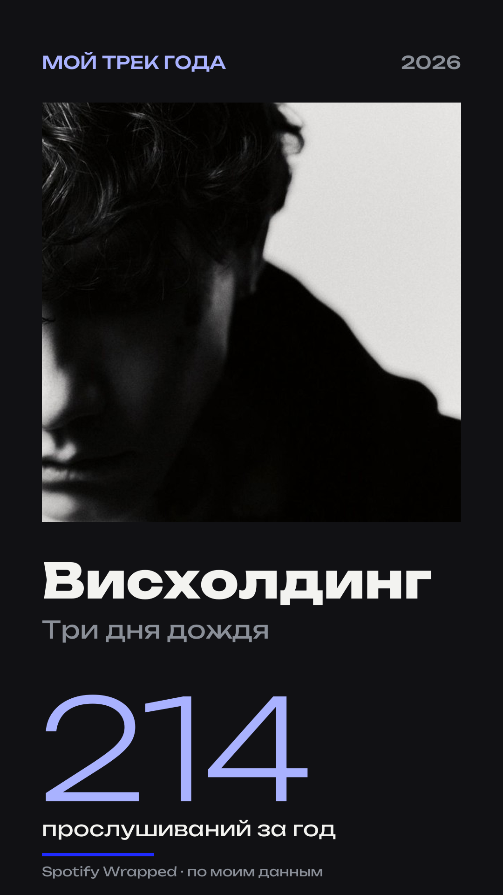

Фатикова Кристина
2026
SPOTIFY
WRAPPED
Как музыка превращается
в историю года
Листайте вниз ↓
За год мы слушаем сотни песен: на прогулке, в дороге, дома или на учёбе. Обычно мы не замечаем, как из этих прослушиваний складывается наш музыкальный год. В декабре Spotify собирает их в одну персональную историю — Wrapped.
01
Вступление / 365 дней

365
дней
Мой год по дням
130
30.12
365/365
минут в среднем в день
пик года — 350 минут
дней с музыкой
Пластинка года: 365 столбиков — 365 дней, высота — минуты музыки за день. Ниже тот же год, развёрнутый в линию; светлая линия — среднее за неделю.
02
История формата
Как всёначиналось?
В 2015 году Spotify впервые показал пользователям персональные итоги прослушиваний. Уже в 2016 появился Spotify Wrapped. Постепенно обычная статистика превратилась в яркую интерактивную историю и ежегодное событие, которого пользователи ждут каждый декабрь.
2015
2015 первые итоги
Первые персональные итоги — пока просто статистика.
2016
2016 Spotify Wrapped
Итоги получают свой формат и имя.
сегодня
→ сегодня ежегодное событие
Ежегодное событие эпохи стриминга.
03
Мой трек года
Что Spotifyсообщил мне
Вот что Spotify сообщил мне о моём годе. Ниже — его слова, мой комментарий и сам трек: его можно послушать.
Мой Wrapped · трек года
Spotify — мне

«„Висхолдинг“ звучал у тебя 214 раз»
— из моего Spotify Wrapped 2026
Мой комментарий
«Три дня дождя» — моя любимая группа, а «Висхолдинг» — моя любимая их песня. Когда она начинает играть, мне по-настоящему хорошо жить: всё, что раздражало, отходит на второй план, и день становится легче. Поэтому я включала её снова и снова — не потому, что нечего слушать, а потому, что с ней всё вокруг становится лучше.
На что обратить внимание
Послушайте и заметьте, как меняется настроение ближе к припеву: в этот момент мне всегда хочется сделать звук громче и подпевать.
Эпизод понятен и без звука: плеер — дополнение, а не условие.
После прослушивания
214 — это не 214 одинаковых раз. Это 214 моментов, когда мне хотелось почувствовать себя лучше, — и это работало. Spotify посчитал повторы, а я помню, как каждый из них менял мой день. Поэтому для меня это число — не статистика, а маленькая коллекция хороших моментов.
Пластинка крутится, только пока играет трек
Мой топ-5 по версии Spotify
Висхолдинг — Три дня дождя
01
214×
Счётчик знает, сколько раз. Что стоит за каждым числом — знаю только я.
How to Save a Life — The Fray
02
188×
моменты — zhanulka, Какая Разница
03
151×
Copines — Aya Nakamura
04
129×
Человечки — STERVELL, VSEMOJNO
05
117×
04
Визуальный язык
Чтопревращаетцифрыв историю?
Сами по себе минуты, проценты и списки артистов выглядят как обычная статистика. Wrapped превращает их в яркие карточки с крупной типографикой, графикой, цветом и движением. Благодаря дизайну цифры становятся частью визуальной истории.
ДО: СТАТИСТИКА
ПОСЛЕ: ИСТОРИЯ
47 382
минуты музыки
ТОП-1%
«Висхолдинг» — 214 прослушиваний за год
Минуты
47 382
Топ-трек
Висхолдинг
Прослушивания
214
Топ-артист
Три дня дождя
Жанры
86
→↓
Процентиль
топ-1%
Те же шесть строк. Цвет, типографика, графика и движение превращают их в кадр, который хочется досмотреть.
05
Последовательность
Как цифрыстановятсяисторией?
Wrapped не показывает всю статистику сразу. Сначала он знакомит слушателя с итогами, затем раскрывает любимые треки и артистов, добавляет неожиданные факты и только потом показывает финальный результат. Каждый экран продолжает предыдущий и создаёт желание листать дальше.
Ниже — пять экранов, которыми Spotify рассказал мне мой год. Это его голос: «у тебя», «ты» — так сервис обращается ко мне.
01 / 05
Spotify — мне: мой год
47 382
минут музыки
02 / 05
Spotify — мне: трек года
214×
«„Висхолдинг“ — Три дня дождя. Столько раз он звучал у тебя за год»
03 / 05
Spotify — мне: артист года
62 ч
«С группой „Три дня дождя“ — больше, чем с любым другим артистом»
04 / 05
Spotify — мне: неожиданный факт
1%
«Ты в 1% самых преданных слушателей группы „Три дня дождя“»
05 / 05
Spotify — мне: итог
«Твой2026»
47 382
минут
1 284
трека
347
артистов
86
жанров
214×
Висхолдинг
1%
Три дня дождя

06
Делимся
Почему мыделимсяWrapped?
Музыкальные итоги становятся простым способом рассказать о себе другим. Любимый артист, главный трек года или попадание в 1% слушателей воспринимаются как что-то личное. А готовый визуальный формат позволяет сразу поделиться результатом в соцсетях.

Делиться итогом — значит говорить о себе вслух. Микрофон — мой голос, колонки разносят его другим.
WRAPPED 2026
47 382
минут
×12
WRAPPED 2026
1%
топ слушателей
×156
×1
×2 048
WRAPPED 2026
214×
Висхолдинг
WRAPPED 2026
62 ч
Три дня дождя
WRAPPED 2026
2026
твой год
WRAPPED 2026
86
жанров
×2 048
WRAPPED 2026
1%
топ слушателей
07
Пределы данных
Алгоритмзнает не всё
Wrapped знает, что и сколько мы слушали, но не понимает, почему мы включали конкретную музыку. Случайный трек, музыка для учёбы или песня на повторе одинаково становятся частью статистики. Поэтому алгоритм показывает лишь одну версию нашего музыкального года.
ДАННЫЕ
≠

Алгоритм забирает из кассеты данные — пиксели поднимаются и уходят. Плёнка остаётся у меня: это и есть память.
08
Финал
Личный итог
За каждой песней могут оставаться люди, места, события и воспоминания, которых нет в статистике Spotify. Сервис способен посчитать минуты и определить любимый трек, но личный смысл музыке придаём мы сами. Поэтому Wrapped становится не просто итогом, а историей года.
Ваша очередь
Вспомните свой трек
Какая песня звучала в вашем году? Напишите её и пару слов о том, где и когда она играла. Это ваш собственный итог — тот, которого нет в Wrapped.
Ваш ответ никуда не отправляется и не виден другим: он сохраняется только в этом браузере.
АВТОР
ТЕМА
ГАРНИТУРЫ
3D
ДАННЫЕ
Фатикова Кристина
Spotify Wrapped:
как музыка превращается
в историю года
Unbounded — цифры и заголовки
Onest — текст
Blender / Cycles
музыкальные предметы — модели .glb
Мой топ-5 треков — из Spotify.
Остальные цифры — демонстрационные.
ПАМЯТЬ